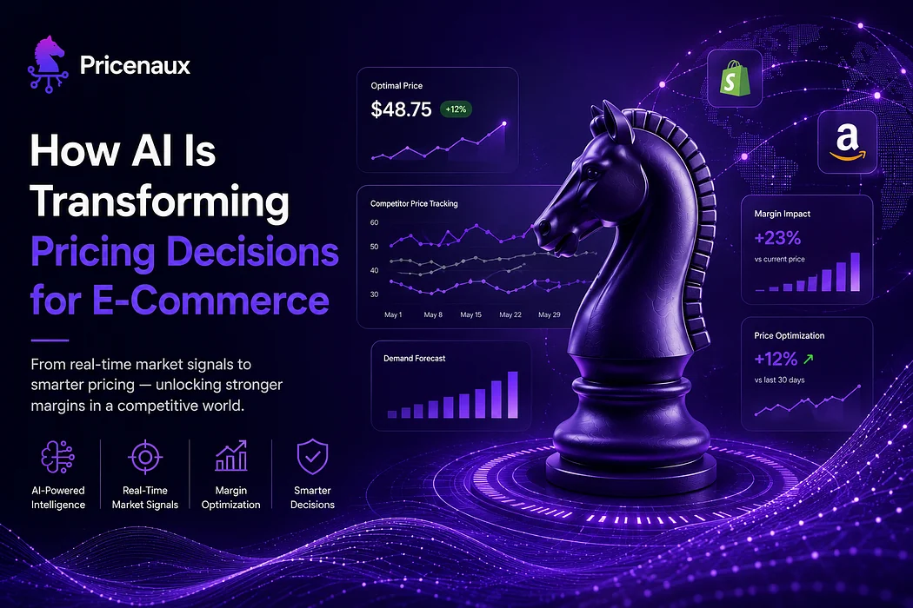
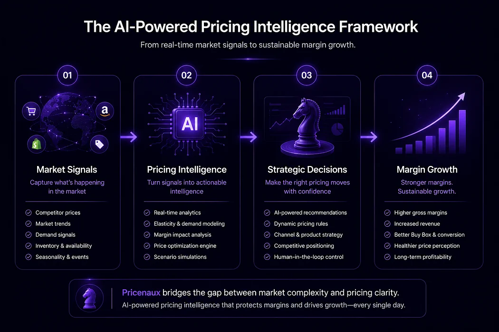
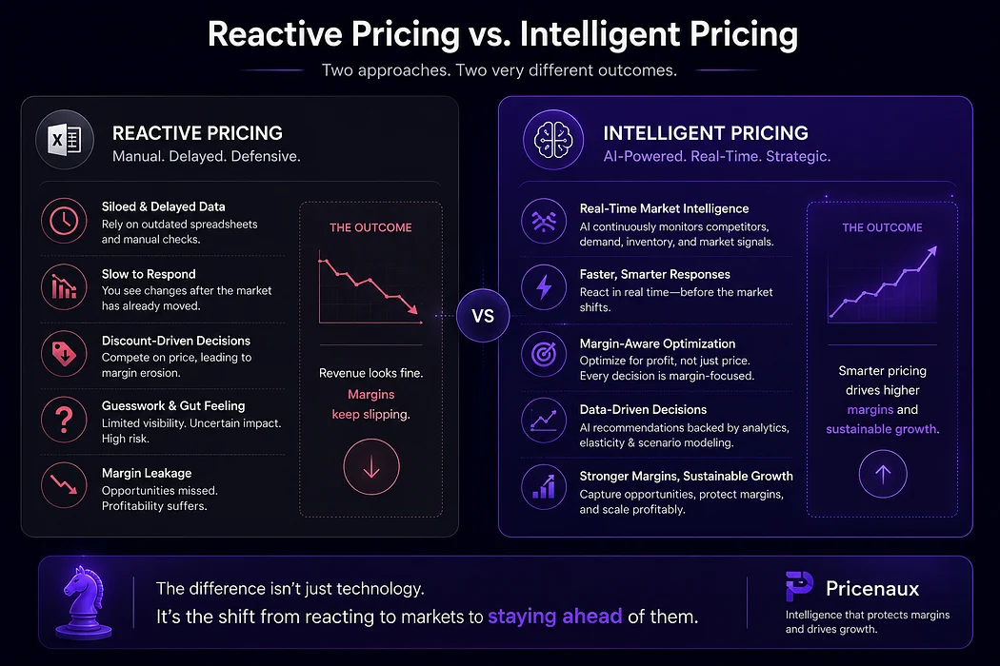
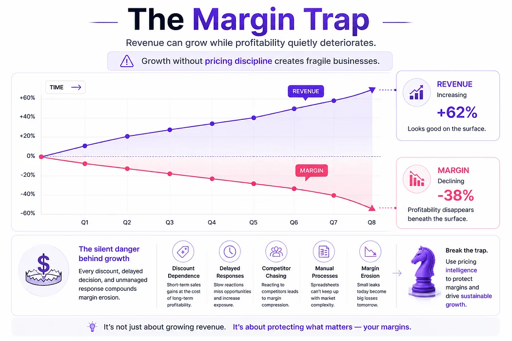

Nermin Sad · CEO & Co-founder
Nermin Sad · CEO & Co-founder
AI-powered pricing intelligence is transforming how modern e-commerce businesses respond to market signals, optimize margins, and make strategic pricing decisions in real time.
Pricing has always been the most powerful lever in e-commerce. It determines how much of each sale you keep, how your brand is perceived, and whether growth actually translates into profit.
And yet, for most merchants, it still operates on autopilot.
A number gets set at launch. It gets nudged when a competitor makes an obvious move, or when a product stops selling, or when someone runs a flash sale. In between — which can stretch into months — the market moves without you. Competitors reprice. Demand shifts. Your ad costs change. The assumptions baked into your price on day one are rarely the same conditions that exist three months later.
That gap — between where your pricing is and where it should be — is where margin goes to die.
AI is what closes it.
The future of pricing isn’t reactive. It’s predictive, adaptive, and built on decisions that are informed before the market moves — not after.

Modern pricing advantage comes from transforming real-time market signals into intelligent, margin-aware decisions that drive sustainable growth.
From static numbers to living pricing systems
Traditional pricing was built around periodic updates ; weekly reviews, quarterly resets, seasonal markdowns. That model made sense when markets moved slowly. It doesn’t anymore.
Today, a competitor can reprice dozens of times in a single day. A demand spike can open a margin opportunity in a matter of hours. A new entrant can undercut your category while you’re still looking at last week’s data.
Modern AI pricing software changes the fundamental question. Instead of asking what price to set, it asks what’s happening in the market right now — and what the right response is, given your specific margin position, inventory level, and brand context. It analyzes competitor movements, demand patterns, customer segments, and conversion signals continuously, and surfaces the intelligence that makes the answer clear.
This turns pricing from a fixed decision into a living system. One that learns, adapts, and gets better the longer it runs.

Modern commerce is shifting from reactive pricing decisions driven by spreadsheets and delayed responses toward AI-powered pricing intelligence built on real-time market signals, strategic optimization, and margin awareness.
Pricing intelligence: the layer between data and decision
Most e-commerce operators aren’t short on data. They’re short on the intelligence that turns data into a clear, confident decision.
After speaking with founders and operators across different industries, I started noticing a pattern: most teams reviewed ad performance constantly, but reviewed pricing far less frequently — even though pricing directly determines whether growth is actually profitable.
That’s the distinction worth understanding. Pricing intelligence isn’t a dashboard that shows you what happened. It’s a system that tells you what’s happening right now, what it means for your margins, and what you should do about it — before the problem compounds.
The practical value shows up fast.
Imagine a competitor drops the price of a top-selling product by 9% on a Tuesday morning.
Without pricing intelligence, most merchants react one of three ways:
they manually match the price hours later,
All three reactions create risk.
By the time the team notices the change, ad costs may already be rising, conversion behavior may already be shifting, and margin erosion may already be underway.
But an intelligent pricing system approaches the situation differently.
Instead of reacting automatically, it asks:
Is this competitor running a temporary promotion or signaling a
longer-term market shift?
Does this competitor historically sustain aggressive pricing?
How price-sensitive is this specific SKU?
What happens to profitability if we match immediately versus hold
position?
Does this product drive customer acquisition, or is it already margin
constrained?
In some cases, the correct decision may actually be to do nothing.
In others, the system may recommend a targeted adjustment on a single SKU while protecting margins across the rest of the catalog.
That layer of reasoning — between signal and action — is where pricing intelligence becomes strategically valuable..
Analytics shows you what happened. Pricing intelligence tells you what to do next. The gap between them is where most merchants lose margin without realizing it.
Shopify pricing: where pricing becomes brand strategy
Shopify merchants live in a different kind of competitive environment.
Unlike marketplaces where products compete primarily on visibility and price, Shopify brands are also competing on perception, positioning, and customer trust.
That changes the role pricing plays.
The challenge is no longer simply reacting to competitor prices. It’s understanding where your brand has pricing power — and where it doesn’t.
Some products should defend margin aggressively.
Others may require strategic flexibility.
And treating every SKU the same is often where profitability starts
breaking down.
The merchants gaining an edge today are not just watching prices. They’re understanding how pricing interacts with demand, positioning, conversion behavior, and long-term brand value, and making decisions that reflect that complexity.
Amazon pricing strategy: competing inside an algorithmic marketplace
Amazon normalized something most merchants were never truly prepared for: markets that move continuously.
Prices shift by the minute.
Competitors reprice automatically.
Visibility changes in real time.
And a delayed response can quietly destroy profitability before
operators even notice the trend.
In that environment, pricing becomes less of a periodic business decision and more of a continuous strategic process.
But competing effectively on Amazon is not simply about lowering prices faster.
The real challenge is balancing competitiveness with margin discipline — staying visible without turning your business into a race to the bottom.
That’s where intelligent pricing changes the equation.
Instead of reacting emotionally or manually to every market movement, AI-powered pricing systems help operators distinguish between temporary noise and structural market shifts.
Because not every competitor movement deserves a response.
And not every Buy Box win is profitable.
Dynamic pricing done right: precision, not volatility
The word dynamic pricing makes some merchants nervous. They imagine prices fluctuating unpredictably, customers feeling burned, brand positioning eroding. Those fears are legitimate — but they’re also the result of bad dynamic pricing, not the concept itself.
Well-governed dynamic pricing operates within defined corridors. It respects minimum margin thresholds that are never crossed, aligns with brand positioning rules, and responds to demand without creating the kind of volatility that damages customer trust.
The goal isn’t to reprice as often as possible. It’s to price correctly — with more precision and more consistency than any manual process can achieve. That means holding firm when the market moves in ways that don’t warrant a response, and adjusting quickly when the data clearly shows the opportunity.
Precision is the point. Not speed.
E-commerce pricing optimization as a growth multiplier
Revenue is the metric most operators watch. Margin is the metric that determines whether the business is actually working.
The math compounds faster than most merchants realize. On a $2M revenue base with a 15% net margin, a 2% pricing leak across the catalog is $40,000 — more than 13% of total profit. That’s not a rounding error. That’s a capital allocation question hiding inside what looks like a normal pricing operation.
Genuine e-commerce pricing optimization connects pricing to the full commercial ecosystem: marketing performance, inventory levels, customer acquisition cost, seasonal demand. When those signals are integrated, pricing stops being an isolated lever and becomes a multiplier — one that compounds conversion rate improvements, margin gains, and inventory efficiency simultaneously.
Brands that treat pricing as a strategic function consistently outperform those that treat it as an operational afterthought. The P&L makes this obvious, eventually. The goal is to see it before the P&L does.
Growth can hide weak pricing for a while. Margins eventually tell the truth.

Revenue growth can create the illusion of success while margins quietly deteriorate beneath the surface. Without pricing discipline and real-time intelligence, small pricing inefficiencies compound into long-term profitability erosion.
Margin optimization: the outcome that makes everything else matter
Every pricing decision ultimately comes back to one objective: margin optimization.
AI-driven pricing changes how that objective is pursued. Instead of simplistic discounting strategies that recover short-term conversion at the cost of long-term profitability, intelligent pricing systems optimize across multiple dimensions simultaneously, price elasticity, segment behavior, promotion timing, cost structure and surface the tradeoffs clearly so decisions are made with full context.
The result isn’t just higher revenue. It’s healthier, more predictable margins and the kind of unit economics that make scaling actually worth doing.
Where Pricenaux fits in
This is the problem Pricenaux was built to solve.
Not faster automation. Not more dashboards to check. A genuine intelligence layer for pricing decisions — one that makes the complexity of the market legible and turns that clarity into decisions operators can act on with confidence.
We started with Shopify merchants because that’s where we saw the problem most acutely. Pricenaux has since expanded across Amazon and Walmart workflows. The platform is free to start — no credit card required.
What’s the biggest pricing challenge your business struggles with today : visibility, speed, competitor pressure, or margin control?
That’s what we’re here to change →
Further reading
If this resonated, the first Pricenaux blog — Your Margins Didn’t Disappear Overnight. They Leaked Through Pricing. — goes deeper on the silent margin erosion problem that most merchants discover too late.
Follow the Pricenaux journey and connect on LinkedIn for ongoing writing on pricing strategy, e-commerce unit economics, and what we’re learning from merchants and pricing teams.
Ready to stop guessing? Start with Pricenaux — free, no credit card required →
Have a perspective on this topic?
Continue the discussion with Pricenaux and other operators on LinkedIn.
Join the LinkedIn DiscussionHow mature is your pricing process?
Benchmark your pricing approach, identify decision gaps, and see where stronger guardrails or intelligence could protect margin.